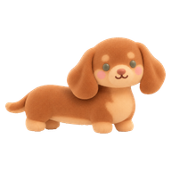
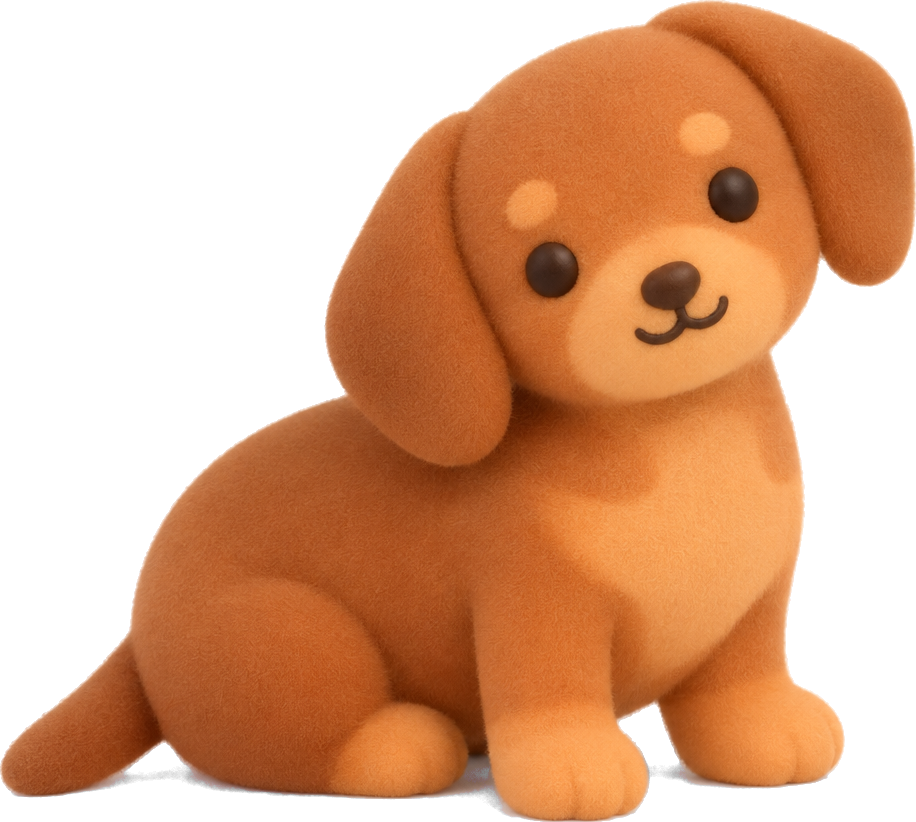

Anyone can take their picture out of the app, free, with the Loop mark on it: every one saved is an advert. Taking the mark off is Ink+. Frame 2 is live: change the shape and the colour, and Save hands you the real file. Press "No mark" to see the ask in frame 3.

Loop Ink+
$9.99 a month
You’re in.
The mark is off.

Thanks for subscribing to Loop Ink+. Payment is not set up yet, so this is free.
Your picture
dinner at 7?
Lili is coming btw
obviously